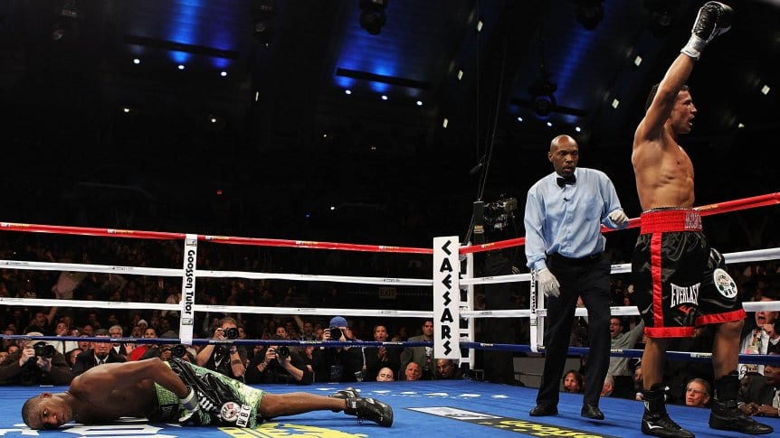
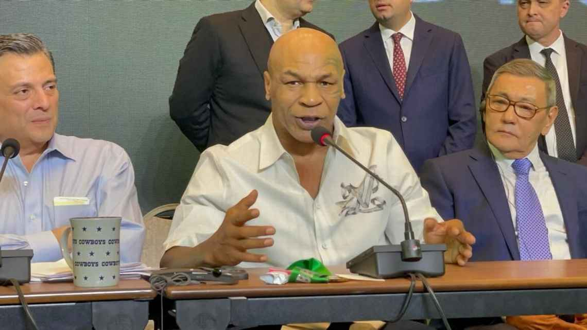
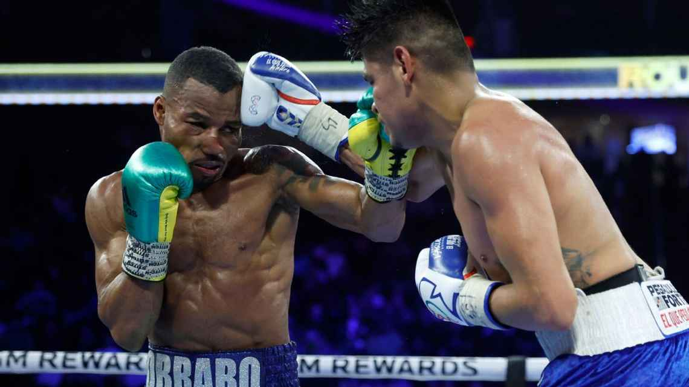
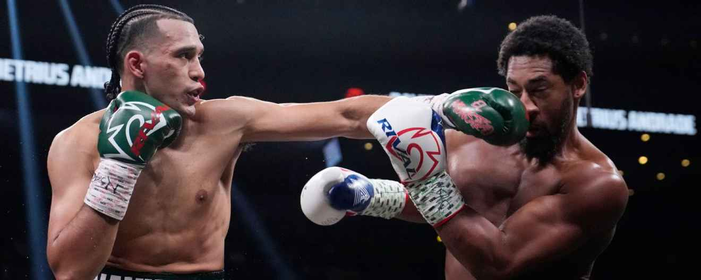

El legendario nocaut de Sergio "Maravilla" Martinez a Paul Williams.
Franco Arias Coronel 28/11/23
El quilmeño impactó a todos con la espectacular definición, en el Boardwalk Hall de Atlantic City, en lo que fue la defensa de su título mundial mediano del CMB. "Ese nocaut lo estudié desde el 5 de diciembre anterior hasta el 20 de noviembre. Desde el 5 de diciembre del 2009 que combatí con Williams y perdí –me ganó él la primera pelea, fue pareja, pero ganó él– hasta el día de la revancha lo estudié incansablemente", explicó en una oportunidad en Infobae.
Seguir leyendo la noticia completa.Mike Tyson analiza Fury-Usyk y el futuro de Ngannou.
Franco Arias Coronel 28/11/23
Mike Tyson paralizó el último día de actividades de la convención 61 del Consejo Mundial de Boxeo, y no sólo celebró el ranking en las clasificaciones de Fracis Ngannou, sino que apuntó también a que Tyson Fury doblegará a Oleksandr Usyk el próximo mes de febrero en una esperada batalla de unificación por todos los campeonatos de peso Pesado. ‘Iron’ Mike Tyson reveló que el plan de Francis Ngannou es ser campeón de boxeo y de artes marciales mixtas al mismo tiempo, aunque él prefiere verle por ahora en el mundo de pugilismo tras su estupendo debut ante el campeón del Consejo Mundial de Boxeo, Tyson Fury.
Seguir leyendo la noticia completa.'Vaquero' Navarrete retiene título superpluma OMB tras empatar con Robson Conceicao.
Franco Arias Coronel 28/11/23
El campeón superpluma de la OMB, Emanuel Navarrete, derribó dos veces al retador Robson Conceicao, pero no pasó de un empate mayoritario.Navarrete (38-1, 31 KO's) tumbó a Conceicao en el cuarto asalto y nuevamente en el séptimo. Estuvo a punto de detener al retador en el penúltimo round cuando el árbitro se acercó cada vez más a la acción, pero Conceicao nunca decayó.
Seguir leyendo la noticia completa.David Benavidez arrolla a Demetrius Andrade y clama por Canelo.
Franco Arias Coronel 28/11/23
David Benavidez pasó como un ciclón por encima de Demetrius Andrade hasta obligarlo a tirar la toalla al finalizar el sexto asalto para retener su título interino supermediano del Consejo Mundial de Boxeo (CMB) y mantenerse como el retador obligatorio de Canelo Álvarez. En la Michelob Ultra Arena, ubicada en el Mandalay Bay Resort & Casino de Las Vegas, 'El Monstruo' mejoró su récord a 28-0-0, 24 KO's y destrozó la autoestima y el invicto de 'BooBoo' Andrade (32-1-0, 19 KO's), que buscaba un título en una tercera división de peso.
Seguir leyendo la noticia completa.